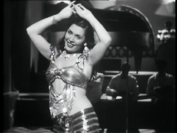
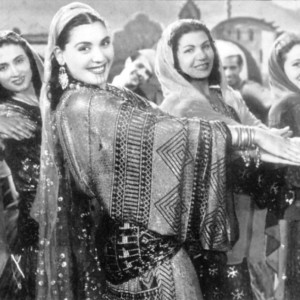

Orijentalni ples je u mnogome suprotnost baleta, svog Zapadnog parnjaka. Suština baleta je u elevaciji, lakoći, prkošenju težini tela. Igračica Istočnog plesa sve se stabilnije uzemljuje, skoro ukopava, jedva da se kreće … ali ipak prenosi onu vrstu neuhvatljivosti i gracioznosti koja se ne da jednostavno odrediti.Edvard Said: Farewell to Tahia
Tahija Karioka (تحية كاريوكا) ostala je zapamćena kao oličenje – i čak poslednji značajni predstavnik – autentičnog, tradicionalnog orijentalnog plesa (raks šarki), koji se u potpunosti zasniva na istočnoj estetici u plesu. Zato je Said smatrao da je Tahijin orijentalni ples nepojmljiv Zapadnjacima, osim možda drugim plesačicama.
Pa ipak – samo njeno ime „Karioka“ dolazi od brazilskog plesa carioca koji je Tahija naučila i toliko oduševila publiku da su je od tada zvali Tahija „Karioka“ (umesto Tahija Muhamed kao do tada).
Tahija deluje kao spoj suprotnosti: odiše duhom Egipta, ali ipak ima mondenski šarm; uvek je odmerena, a nikad prosečna; ume da bude veoma erotična, ali ne i vulgarna. Bila je ujedno dama, fatalna žena, kraljica, seljanka…
Tahija je ustvari bila svestrani zabavljač i umetnik: ne samo da je bila poznata i po „Istočnom“ i „Zapadnom“ plesu, već je i pevala, svirala sagat (zile), a ostvarila je i dugu i obimnu glumačku karijeru u pozorištu i u brojnim filmovima (snimila ih je preko 100) u kojima je igrala i dramske uloge potpuno nevezane za ples.
Rođena je 1915. ili 1919. kao Badavija Muhamed u delti Nila. Oduvek je volela da igra, ali se porodica protivila tome; braća su je čak više puta pretukla da bi je odvratili od plesa. Pobegla je od kuće sa 15 godina i utočište našla kod stare komšinice Mahasen koja je sada živela u Kairu gde je nastupala kao pevačica i plesačica po svadbama i u lokalima. Žarko je želela da je Mahasen povede sa sobom na „tezge“, ali je ova smatrala da to nije dobro okruženje za tako mladu devojku.
Badavija – sada već pod imenom Tahija – dobija svoju šansu kad upoznaje vlasnicu najelitnijih lokala u Kairu – Badiju Masabni. Badijin lokal bio je drugačiji od uobičajenih zloglasnih bircuza. Ne samo da se tu okupljala elita društva, već se davao i „ženski matine“ kada su predstave mogle da posećuju samo žene. To je bio genijalni potez: lokal u koji mogu da zađu i „pristojne“ žene bez opasnosti po svoj ugled i čast – nije nikako mogao da bude na lošem glasu.
Tahija je počela kao horistkinja, ali vredno je trenirala, učila je i zapadne igre kao što je balet, dok na kraju nije postala vodeća solistkinja Badijinog ansambla.
Međutim, Tahijin stil orijentalnog plesa ostao je u potpunosti tradicionalan, egipatski, „istočnjački“. Iako je odlično plesala mnoge zapadne igre popularne u to vreme – nije mešala elemente zapadnih plesova sa orijentalnim. Njen orijentalni ples direktno je povezan sa plesom kao što su ga praktikovale avalim (alime, almeje), tradicionalne svestrane zabavljačice koje su publiku zabavljale pevanjem, plesom, sviranjem muzike i pričanjem šaljivih dosetki.
Bez obzira da li je igrala orijental, folklor ili neki zapadni ples Tahija je uvek odisala nekom specifičnom elegancijom, kakve čini se nije bilo ni pre nje, a ni kasnije. To je delimično tačno za sve igračice tog perioda, ali posebno za Tahiju, zbog čega su njen stil plesa nazivali takođe i „ples gospođa“ (raks alhavanim).
Tahija je uvek smatrala da igračica treba da se ponaša kao dama. U Badijinom lokalu, mlađe igračice su se ugledale na nju, divile joj se i trudile da provode s njom vreme iza scene, a Tahija ih je kao brižna majka ili starija sestra stalno upozoravala da održe visoke standarde; da se „ponašaju kao dame“ i nose se ponosno u svakoj situaciji na plesnom podijumu i izvan njega. Za Tahiju čak i „način na koji igračica hoda“ je suštinski važan za dostojanstvo plesačice i plesa, i budno je čuvala ugled svojih štićenica.
Priča se da je jednom prilikom jedna od mlađih igračica ponela pojas na kome je bilo izvezeno u perlicama ime momka sa kojim se zabavljala. Kada je to videla, Tahija ju je otvoreno prekorila, govoreći joj da „ne priliči jednoj dami“ da objavljuje ime svog ljubavnika na kostimu za ples. Prekorena igračica nikad više nije obukla taj pojas.
Tahijin privatni život bio je buran i jednako pun kontradikcija. S jedne strane bila je deo mondenske elite svog vremena, sa druge radikalni levičar po političkom ubeđenju (zbog čega je nekoliko puta bila i u zatvoru). U čudnoj simbiozi bilo je i njeno „slobodno“ ponašanje i konzervativnost: udavala se čak 14 puta ali nikad nije pristajala na intimne odnose izvan braka.
Tahija je međutim, uvek naglašavala da je njena prava ljubav i strast umetnost. Umrla je 1999, nakon što je poslednje godine posvetila duhovnom životu i religiji.
Za Tahijom su ostali samo njeni filmovi, kojima i danas nastavlja da opčinjava publiku svojim emotivnim plesom, pevanjem i glumom.
Biografski podaci o Tahiji uzeti su iz knjige Umetnost orijentalnog plesa, kao i iz sledećih članaka
Edvard Said, „Farewell to Tahia“. Al-Ahram Weekly (Cairo), 7 October 1999
Pamela Sloane, „Meeting Tahia and Samia in 1977“. GildedSerpent, 15 May 2012
Barbara Luscher, „The Golden Age of Egyptian Oriental Dance“. The Belly Dance Book : Rediscovering the Oldest Dance